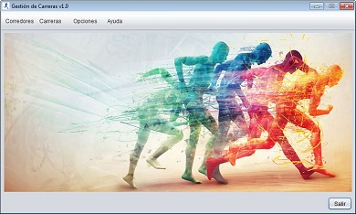

PANTALLA PRINCIPAL

Características:
Desde la pantalla principal tenemos acceso a todas las funciones de la aplicación mediante la barra de menú
situada en la parte superior, cada uno de sus elementos desplegará una lista con las funcionalidades asociadas.
Elementos del menú:
Corredores:
- Nuevo:
Despliega la pantalla corredor para crear un nuevo corredor.
- Modificar:
Muestra una ventana donde introducir un DNI para mostrar el corredor a modificar.*
- Eliminar:
Muestra una ventana donde introducir un DNI para mostrar el corredor a eliminar.*
- Ver:
Despliega la pantalla lista corredores para consultar y manejar los corredores existentes en la aplicación.
- Importar:
Despliega una ventana de selección de archivos desde donde se puede importar(El tipo de fichero aceptado
es CSV con formato: nombre,dni,fecha de nacimiento:dd-mm-yyyy,dirección,teléfono).
Opciones:
- Cofigurar guardado automático:
Muestra una ventana donde introducir los minutos que queramos asignar para realizar
un guardado de forma automática de de datos.
- Cambiar aspecto visual:
Muestra una ventana donde seleccionar un estilo visual que se aplicará al aceptar.
Ayuda:
- Abrir:
Despliega la ayuda de la aplicación.
* Esta función tambien esta disponible desde la pantalla de lista de corredores.